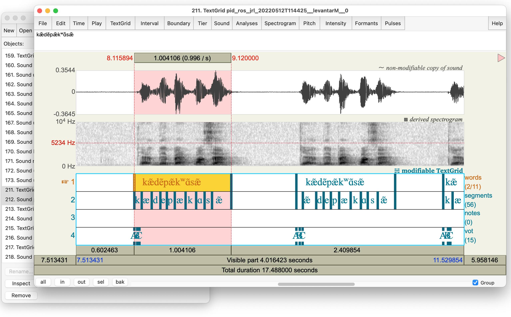
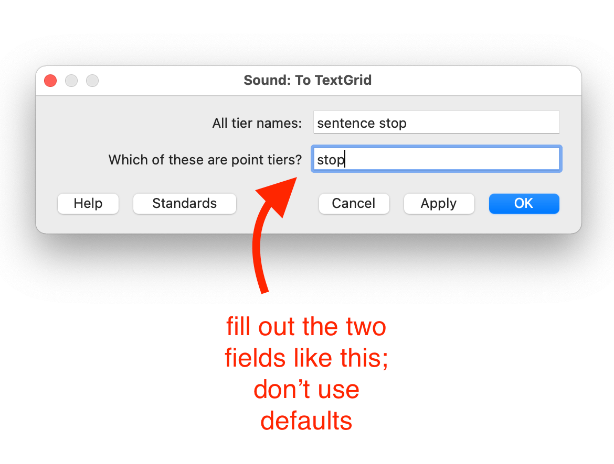
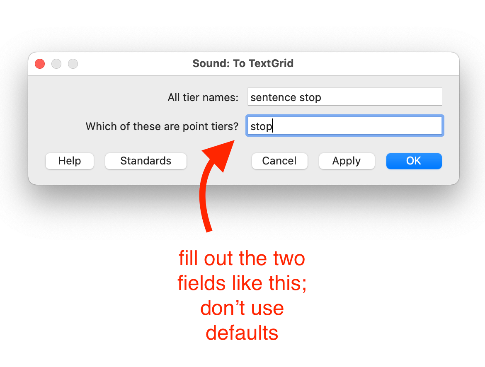
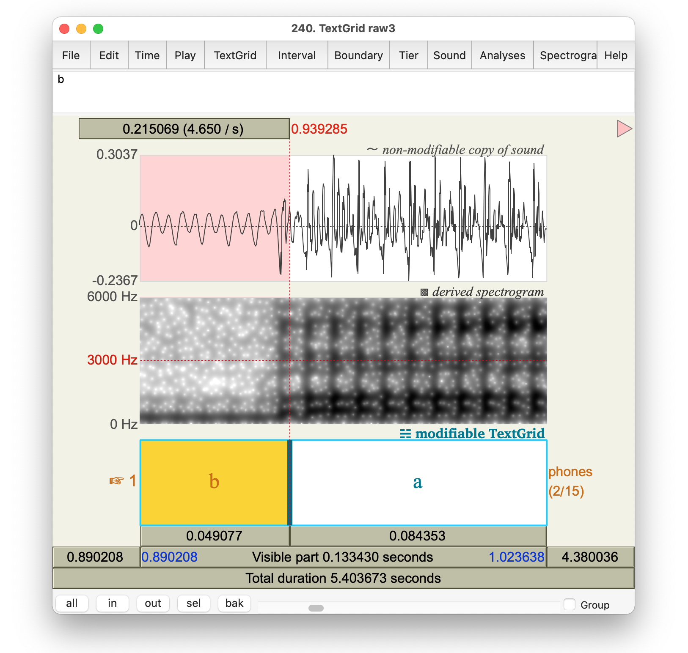
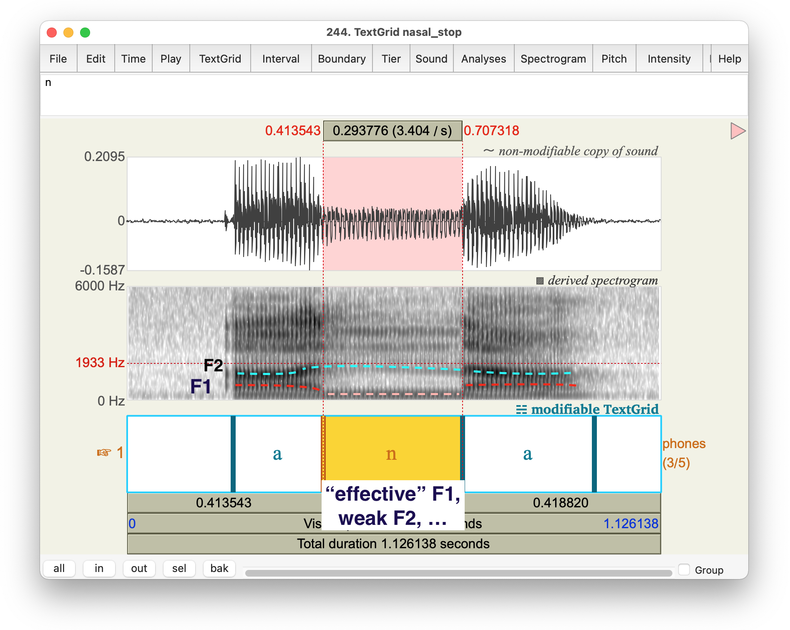
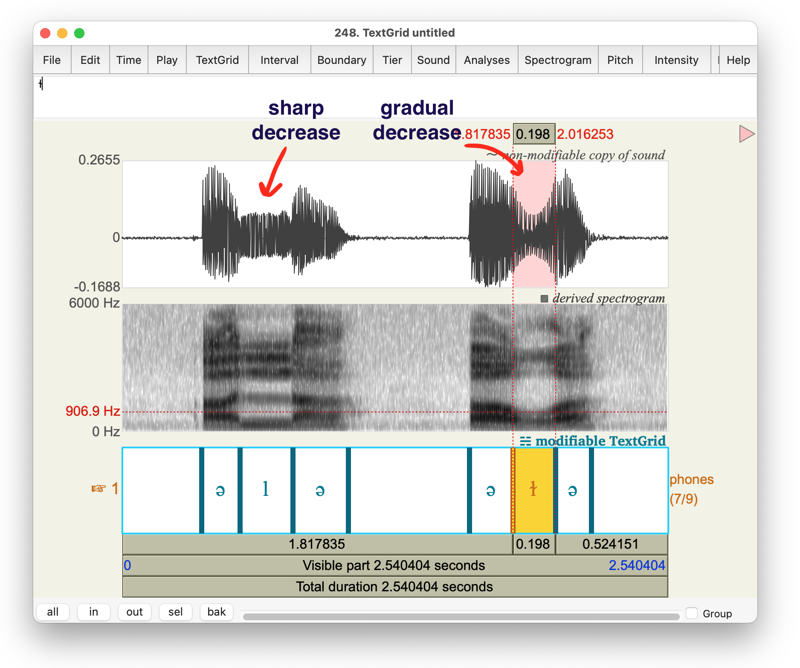
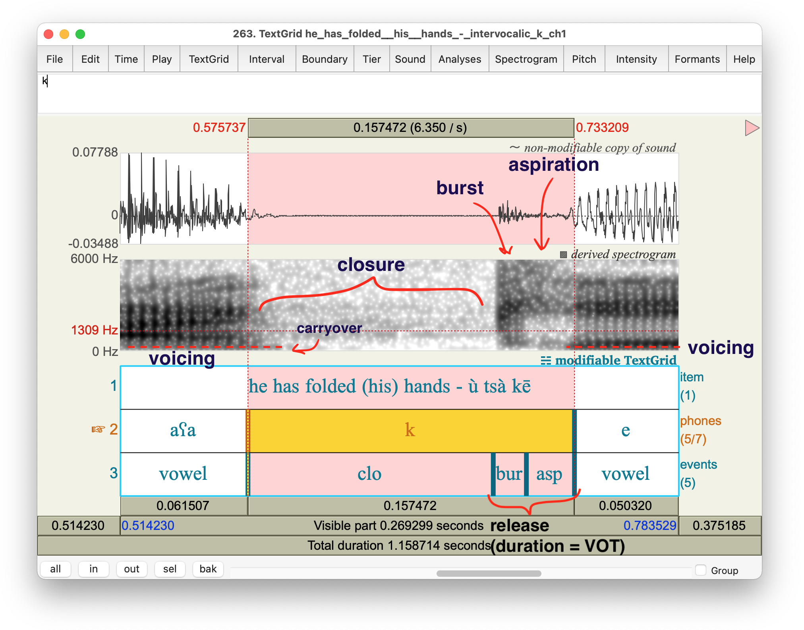
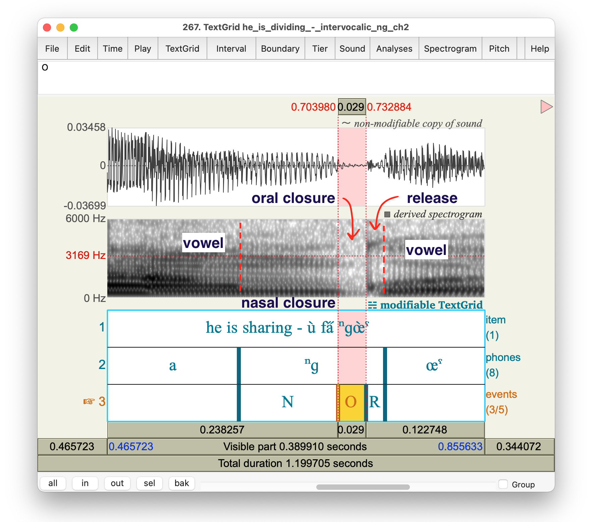
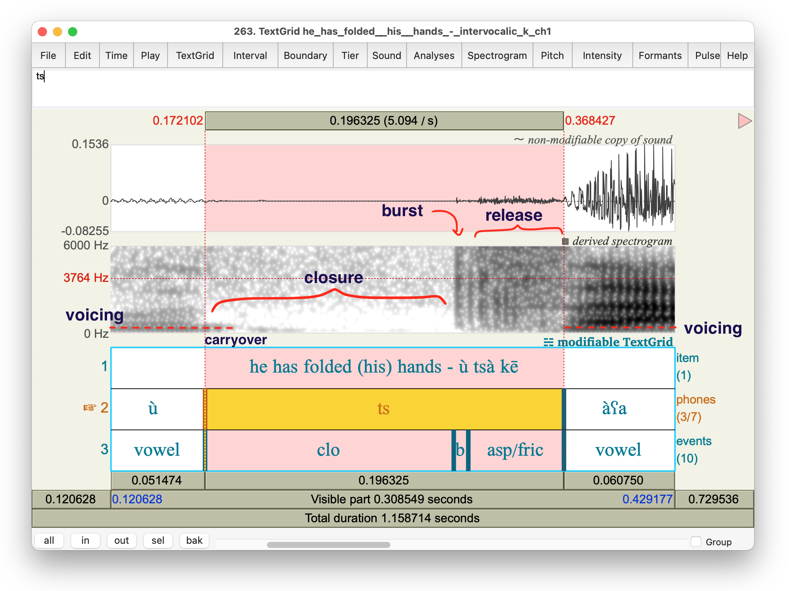
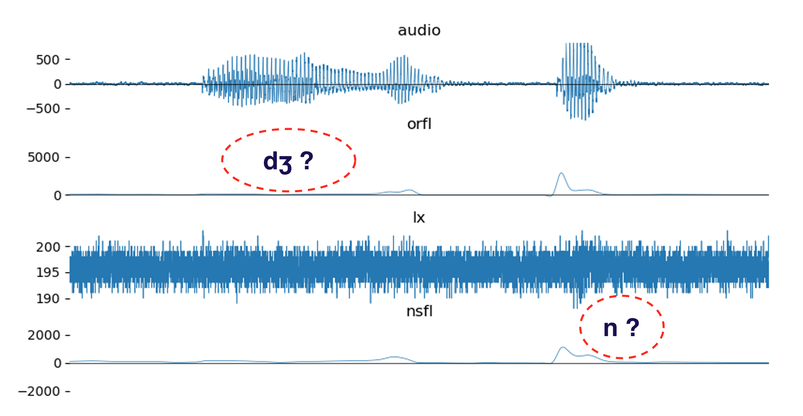

Phonetic annotation: the basics and the not-so-basics [and airflow]
23 March 2022
UC Shattuck Plaza
Matthew Faytak (Univ. at Buffalo)
Overview
Annotation in Praat
- Navigating Praat and TextGrids
- Placing boundaries using waveforms and spectrograms
- Choosing (and regularizing) labels
- Miscellaneous tips
Troubleshooting the airflow records
The task
The task of annotation is basically assigning text labels to bounded spans of an audio file,
- Without these, we can’t do any kind of analysis
- Scripts generally can’t find labels or boundaries for us
- We’ll discuss forced alignment at the end, which can do some of these things but requires very specific pre-conditions
The task
This is different from the annotation task given to you in 2019
- We are not manually annotating oral/nasal airflow maxima or minima (etc)
- This will be left to scripts
- Some of it will be replaced with flow volume/rate means or trajectory modeling
- We are not dedicating specific tiers to each
- Just segments
- Tiers for subsegments if desired (flexible)
- No point tiers (at least not required)
Pros: less manual annotation by fieldworkers; more time to dedicate to other things
Cons: segmentation becomes very important, must be fairly systematic
Your work setting
We are assuming some aspects of your work setting and inputs/outputs, for quality purposes:
- Use headphones to listen
- Use your ears and your instrumental displays to segment
- Use Praat
- Why not ELAN? You need a spectrogram; better waveform
- Praat is also very similar to ELAN in its general structure
- Use TextGrids (.TextGrid format)
- Very similar to ELAN .eaf files
Use the entire file
We suggest using all channels of the recording (including airflow) to annotate
- The airflow masks exert an overall “muffling” effect on the acoustic signal
- Reduced amplitude of high-frequency energy: less energy in fricatives, affricates, stop bursts
- Oral airflow may be more reliable than the audio record for the timing of events for fricatives, stops, and affricates
But be careful not to draw boundaries solely based on nasal airflow
- Using nasal airflow risks circularity
- “I defined nasal vowels as vowel intervals with high nasal airflow” … “we find that nasal vowels have increased airflow”
Basic Praat
Object window
Praat opens with Objects and drawing windows; you can generally ignore the drawing window and focus on the object window
- Note that I capitalize objects as Praat does (Sound, TextGrid, LongSound, etc)
Praat obligatorily interacts with objects through selection
- For example, the following options become available if you open a Sound and select it

Saving from the Objects window
The Objects window stores objects in memory but doesn’t save them to your system. You must save them or your progress will be lost
- In nearly all cases, you will be creating, editing, and saving TextGrid objects rather than Sounds
- More on TextGrids in a bit

Accessing the manual
Finally, there is a manual accessible from the Objects window (and several other places)
If you have minor issues with Praat, you can ask me, but try to check the manual first


View and Edit window
If you select (an) editable object(s) and choose “View and Edit”, the window where we will do most of our work opens
- Here, I’ve selected a matching Sound and TextGrid (which already contains some annotations)

TextGrids
Most of our annotations will be done as TextGrids
- Create by selecting “Annotate”, “To TextGrid”, and filling in tier names you want
 

Tiers and their contents
TextGrids contain tiers, which in turn contain intervals or points
- TextGrids are automatically the same length as their associated Sounds
- Intervals have a start time, end time, and label
[picture illustrating]
- Points have a time and a label
[picture illustrating]
- Both tier types can be written directly into
Points vs. intervals
The two kinds of tiers reflect different types of audio selection
- Points correspond to instantaneous, single time points
- Intervals correspond to ranges of time
Generally, in this project, we are interested in ranges corresponding to particular articulatory states, so we mostly favor using intervals
- Exceptions: flaps or stop bursts, which are more or less instantaneous
Automatic creation of TGs
There are any number of basic Praat scripts out there to automatically create TextGrids with a certain tier structure
- I will demonstrate one such script here:
- Look at each WAV name in a folder
- If no TG exists in a designated location, create it there with specified tier structure
- Open the resulting TG and
- Copy-paste the code into a text file and save as [some name].praat
Editing TGs
Efficiently adding boundaries to a TG depends on keyboard shortcuts
Zooming:
- CTRL+I, CTRL+O: zoom in and out
- CTRL+N: zoom to range/interval selected
- CTRL+A: zoom out to all
Scrolling:
- Scroll left/right to move viewing window
- ALT+arrow key to move selection from interval to interval (or point to point)
Editing TGs
Placing boundaries:
- Make a point selection and click the little circle in the tier
- Or make a point selection and press CTRL+#
- Where # is the tier number you want to add a boundary to
- Or do CTRL+# with a range/interval selection to place both start and end times
- All of these methods can time-lock boundaries to a single time selection, which is desirable
- i.e. word and phone start/end at the same time
Playtime
If you haven’t been following along, let’s take a couple of minutes to try out some of the basic annotation tricks we’ve gone over
- If you are having difficulty setting anything up, ask
- If you are completely lost, ask us and get un-lost
Choosing labels
Labeling vs transcription
Labeling intervals/points for phonetic analysis is not, strictly speaking, phonetic transcription
- More like phonological transcription
- At most, broad phonetic transcription (omitting some unimportant or non-contrastive aspects of variation)
Rather, think of these as a restricted vocabulary which we mark off our experimental conditions of interest
- Where our experimental conditions are segments (current segment, current segment’s environment as defined by neighboring segments, etc)
Should I transcribe variation?
Generally, no! Variation should emerge from the phonetic analysis rather than being imposed by our transcriptions
- Besides, detailed transcription of variation actually makes analysis more difficult
- Script needs regular, predictable labels to find all segment tokens
- If not predictable, then we have to add a task of finding all the variants
Socially conditioned variation
This includes sociolinguistic variation, which you may be noticing after your first field trip (or for a longer time)
- Again, we want the patterns of variation to emerge from a common annotation system shared by all varieties of the language
- Subphonemic analysis will capture the different realizations; you don’t have to do it in your transcription
Example: don’t
Suppose we hear some weak voicing of /p t k/ when they are intervocalic, especially in a word which is nasalized due to harmony and where the /p t k/ are supposedly “transparent”
So we transcribe as we go along, variously:
- /p/ in /VpV/ as [b], [b̥], [ⁿb], [ⁿp], [bp], etc.
- /p/ in /ṼpṼ/ as [b], [b̥], [ⁿb], [ⁿb̥], [ⁿp], [ⁿbp], etc.
This is a problem for analysis, especially if we aren’t tracking the transcriptions we are using
- How do we know which phoneme, /b/ or /p/, is represented by, say, any given [b]?
- How do we get all tokens of any given phoneme if their labels aren’t consistent?
Example: do
In this case, even though it is counterintuitive, /p t k/ should always be given the labels p t k regardless of voicing, nasal leakage, etc
- Closer to phonemic labels than anything else
- Easy to find all /p t k/ in later analysis
- Degree of voicing, nasal leakage, etc will be found in the course of analysis of acoustic/airflow data
An exception: harmony
Harmony outcomes should be fully specified for any segment which is described as an undergoer
- Again, use consistent, restricted labels whenever possible
- e.g. give any vowel which is supposed to be nasal as Ṽ regardless of perceived nasal quality
- e.g. give all voiced oral consonants /b d g/ as nasal [m n ŋ] when in a nasalized word/harmony span
Why?
- Most “experimental” conditions for research questions are based on nasal/oral spans
- If we don’t mark output of harmony, we have to search the whole word for a trigger and apply rules to get the output… but in a script
Segmental and subsegmental boundaries
Be accurate!
Accurate placement of segmental boundaries is essential for analysis relating to some questions
- Closures, vowels, etc must be precisely marked off at the time points they occur at
- Failure to do this will lead to portions of other segments being spuriously included in your analysis span
- Might erroneously think a big jump in, e.g., nasal airflow occurs during a segment when it really occurs before or after it
If you are unsure of how you’re doing, annotate a small portion of the data and ask Matt to check on it
Voicing
Visible as voice bar at bottom of spectrogram, and as periodic (repeating, regular) motion in waveform


Partial voicing
Segments can be partially voiced, with the voicing tending to be “carryover”
- “Carryover” voicing intervocalically, from previous vowel
- Partial devoicing (pictured below) towards end of a voiced closure

- You might annotate the timing of voicing as a subsegmental property to determine effect of nasality on voicing or vice-versa
Voicing and echo
Don’t be fooled by echo, especially in very reverberant recordings and when low vowels or other intense sounds echo
- Echo can resemble a voicing bar extending into a following stop or fricative
- The token of /kʷ/ below is not substantially voiced, for example

Glottal stop and creak
Glottal stop is rarely an actual stop (CITE)
- Often a period of creakiness instead
- Vocal fold pulses further apart, often irregularly spaced
- Creakiness is also often associated with glottalized stops

Oral vs. nasal(ized) vowels
Compared to oral vowels, nasal(ized) vowels have more “smudging” of formants; noticeably weaker (lighter) F1
- (Acoustically, this is due to “antiformants” that overlap with formants and partly cancel them out)
- A very smudged “effective F1” results

Nasal stops
Abrupt loss of formant intensity visible in spectrogram; major dip in intensity in waveform, formants “smudge”, effective F1 visible (and not much else, unless very intense)

Central approximants
Gradual decrease and then rise in amplitude, formants deflect towards the approximant target and then back
- Segmenting these from neighboring vowels can be tricky; best to go by ear and pick the “halfway” point

Laterals
Most non-“dark” [l] have a sharp discontinuity in formants: formants shift; amplitude abruptly lowers a bit
“Dark” [l] may show a more gradual change in values (and decrease in intensity) like a central approximant

Plosives
Multiple articulatory events; annotate these together as the plosive or annotate sub-parts, depending on your RQs
- Closure
- Release (can be annotated as a single stretch to yield voice onset time)
- Burst (spike in waveform)
- Aspiration (“on” following vowel, but should be annotated as part of the consonant)
- Release ends when vowel’s normal formant structure and voicing begin

Plosive voicing
Plosives can be prevoiced, with their voicing bar plainly visible even during closure
More commonly, voiced plosives are somewhat devoiced (recap)
Unvoiced plosives can also gain some carryover voicing from the preceding vowel: voicing not “shut off” quickly enough
- Voicing carryover (during closure)
Partially nasal consonants
Prenasalized stops (to take one possible example) may show oral and nasal closure portions; the transition between these can be spotted with some effort

Another example:

Affricates
Like plosives, there are multiple events that could be segmented
- Similar to plosives with the addition of frication to release
- Usually not worth separating from aspiration (or possible to do so)

Trills and taps
Usually easy to segment: quick contacts (multiple for trills, single for flaps/taps)
- Taps don’t lend themselves too well to interval segmenting, since they are so short as to be sort of instantaneous
- See the point tier below: brief closures between the tongue and palate

Trills and taps
Both of these sounds can fail, however
- Flaps can close incompletely (intensity dip still visible)
- Trills can fail to start trilling (for aerodynamic reasons); approximant or fricative may result

Airflow troubleshooting
Airflow inspection
In theory, when you record, you should be looking at your airflow records to quickly check whether there are big problems
- Mask leakage due to poor sealing (discard acq)
- Lack of separation of channels (discard acq)
- Other, more mysterious, systematic problems which we have not yet identified (save and let us know)
Leakage / mask seal problems
Mask may not seal with face fully: sensors can’t sense flow changes in this case
- Slight tendency for the oral channel alone to be affected (in 2 datasets I’ve inspected)
- Flat or very low-amplitude traces; very low variation even when some is expected
- Or, you’ve lost a circular “screen” in one of the holes (impedes airflow enough for sensors to work with)
An example: Kawahiva [ɛdʒupĩn] ‘climb!’

Flow separation problems
If you get identical flow for oral and nasal channels during speech, then you may have a leakage problem
- Mask partition was not separating oral and nasal flow
An extreme example: Kawahiva [tata] ‘fire’:

Flow separation problems
A (probably) more typical example: Kawahiva [ɨtʃĩŋga] ‘sand’
- While not an exact copy, the channels are suspiciously similar
- Spikes in nasal airflow apparently not timed to the [ŋg]

- Good token, same word
- Spike in nasal flow, clear reduction in oral flow at the same time (during [ŋg])

Scale problems
Make sure to look at speech when inspecting, and only speech (not breathing before/after)
- Breathing (especially through open vocal tract) produces big swings in airflow
- Both Praat and the post-acq display software scale airflow (and audio) displays to fill the display area
- A big inhale/exhale will make speech look like a very small fluctuation (due to scale)
More examples (in Praat)
Kubeo all-nasal [mẽnẽmẽ] ‘tree sp.’
- Nasal airflow spikes during the nasal stops
- Low, even oral airflow throughout (possibly a bad oral seal)

More examples (in Praat)
Kubeo all-“oral” with voiced consonants: [bedebo] ‘duck’
- Oral airflow spikes at stop release
- Nasal channel suggests some slight velic opening (“leakage”) during voiced stop closure
- Enhancement to voicing?

More examples (in Praat)
Kubeo [nɨ̃kakɨ] ‘I went’ with a voiceless stop (and a variety of other segments)
- No velic leakage during the [k]
- Unlike for, say, [b] or [d] in the previous slide

Airflow “zero” recordings
Zero recording method (reminder)
Take a zero recording before a session starts; take another when you’re finished
- Turn on/plug in equipment and leave in place for 15+ minutes beforehand
- Set mask on a table, in an area sheltered from wind, and move some distance away from it
- Sit still (no one should walk past while recording)
- Run the zero record command line prompt per instructions
- Check the record to ensure there are no big fluctuations in airflow level
If you take a long break, consider repeating the zero recording when you restart
- Nothing wrong with having several zero recordings
Inspection of zero recordings
An open question: what kind of fluctuations in “zero levels” exist, associated with the same session
- Are there rather large differences (fluctuations on the scale of minutes or hours) in zero offset?
- Or are these much slower?
- Or are they basically nonexistent?
Let’s take a few minutes to pull out our files and inspect zero files to determine answers

Socially conditioned variation
This includes sociolinguistic variation, which you may be noticing after your first field trip (or for a longer time)